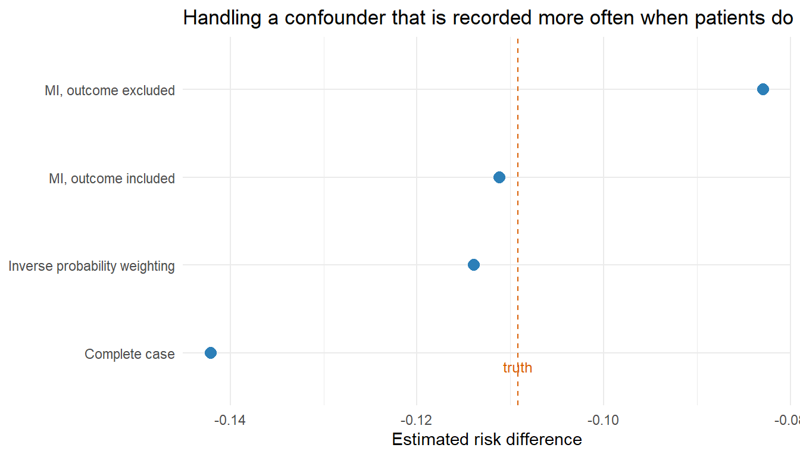
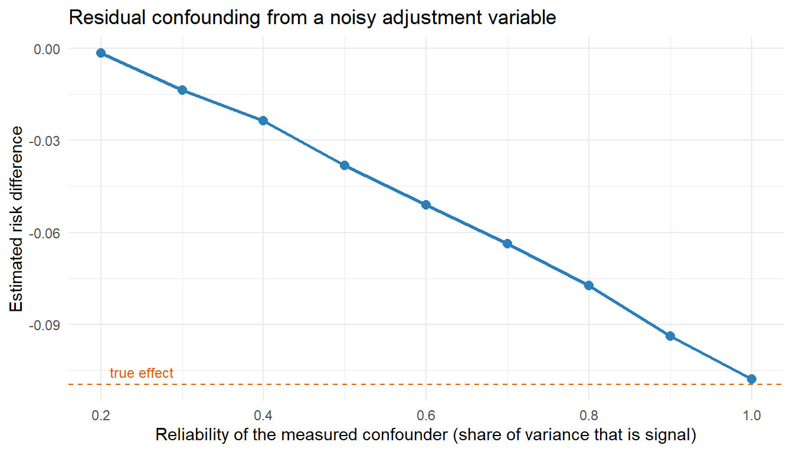

set.seed(404)
n <- 50000
X <- rnorm(n) # age, always recorded
L <- 0.6 * X + rnorm(n) # severity, sometimes recorded
A <- rbinom(n, 1, plogis(-0.2 + 0.9 * L + 0.3 * X)) # treatment follows severity
Y <- rbinom(n, 1, plogis(-1.2 + 1.0 * L + 0.4 * X - 0.8 * A))
# The true ATE, from the data-generating process
p1 <- plogis(-1.2 + 1.0 * L + 0.4 * X - 0.8)
p0 <- plogis(-1.2 + 1.0 * L + 0.4 * X)
truth <- mean(p1) - mean(p0)
# Severity is recorded more often for patients who do badly
R <- rbinom(n, 1, plogis(0.1 + 0.7 * X + 1.3 * Y))
dat <- data.frame(X, L = ifelse(R == 1, L, NA), A, Y, R)
c(truth = round(truth, 4), `proportion recorded` = mean(R))
#> truth proportion recorded
#> -0.10920 0.5729820 Missing Data and Measurement Error
Unrecorded values, informative visit processes, and variables measured with error
Estimated reading time: 40 minutes
A laboratory value is missing from a registry because nobody ordered the test. Somebody decided not to order it, and in a health system that decision is rarely random: a patient with diabetes gets another HbA1c when the disease looks like it is moving, and a patient who is stable waits six months. The measurement process is itself a response to the patient’s state, which makes missingness in registry data informative by default rather than by exception.
This chapter separates three things that analyses routinely run together, then works through what to do about the second and third.
Learning objectives
- Distinguish missing data from censoring and from intercurrent events
- Read missingness as a node in the causal graph rather than as a label from a taxonomy
- Choose among complete-case analysis, multiple imputation, and weighting, and know what each assumes
- Treat missingness as an intervention node when the estimand calls for it
- Quantify how far a mismeasured confounder or a misclassified outcome moves an estimate
20.1 Three problems that look alike
| Problem | What is true | Where it is handled |
|---|---|---|
| Censoring | The outcome has not happened yet, or follow-up ended before it could be seen | Censoring weights or a censoring node (Chapter 26) |
| Intercurrent event | The outcome is observed, but what it means has changed | An estimand strategy (Chapter 6) |
| Missing data | The value exists and was not recorded | This chapter |
A patient who stops a statin at month three and dies at month nine has no missing data. The death is recorded. A patient whose creatinine was never drawn has missing data, and the creatinine had a value the whole time. Treating the second as though it were the first, by censoring patients at their last laboratory value, throws away information and usually introduces bias.
20.2 Missingness as a node, not a label
The MCAR, MAR, and MNAR taxonomy is useful for classifying an answer and poor at producing one, because the labels describe a property of the joint distribution rather than a mechanism you can reason about with clinicians. The more workable move is to draw the missingness indicator into the graph and ask what points at it (Daniel et al. 2012; Mohan and Pearl 2021).
Write \(R = 1\) when a variable is recorded. Then missingness is ignorable given a set of variables \(V\) when \(R\) is independent of the missing value conditional on \(V\), and the analytic question becomes: which recorded variables would have to be in \(V\) for that to hold? In registry work the honest answers usually include the outcome, or something that predicts it, because the tests that get ordered are the tests a worried clinician orders.
That has a consequence analysts often resist. If the reason a covariate is missing depends on the outcome, then the outcome has to appear in the imputation model. Leaving it out to avoid “using the outcome to make up exposure data” produces exactly the bias it was meant to prevent, as the worked example below shows.
The visit process carries information
A missingness indicator is a poor repair and a good predictor. Whether a test was ordered, how many contacts a patient had in the window, and how long since the last measurement all describe the clinician’s assessment, which is otherwise unrecorded. Put those variables in the nuisance models. Do not mistake putting them there for having removed the bias.
20.3 Three repairs
Complete-case analysis drops rows with any missing value. It is unbiased when the probability of being complete does not depend on the outcome given the variables in the analysis model, which is a narrower condition than most papers that use it acknowledge. Its real cost in registry data is that completeness across ten covariates is rare, so the analysis quietly restricts to the most heavily investigated patients.
Multiple imputation models the missing values, draws several completed datasets, analyses each, and pools. It handles covariate missingness well and needs the imputation model to be compatible with the analysis model. With a flexible machine-learning estimator downstream, that compatibility is hard to guarantee, and the pooled variance from Rubin’s rules can be wrong in either direction.
Weighting models the missingness instead of the values. Each complete record is upweighted by the inverse probability that it was complete, which reconstructs the population the complete cases were drawn from. This fits targeted learning naturally, because the missingness mechanism becomes one more nuisance function to estimate with Super Learner, and the missingness indicator becomes a node in the longitudinal factorization alongside treatment and censoring.
The fourth option is to change the question. If the estimand is “what would the effect have been had every patient been measured on schedule”, then the measurement indicator is something to intervene on, not adjust for. That target is a controlled direct effect with respect to the measurement process, and it is well defined, estimable by the same longitudinal machinery as any other intervention node, and often closer to what a health system can act on. A policy of “measure HbA1c every six months” is implementable in a way that “know everyone’s HbA1c” is not.
20.3.1 What goes wrong, in numbers
The simulation puts a confounder behind a missingness process that depends on the outcome, which is the registry situation: patients who do badly get worked up more thoroughly.
A g-computation helper keeps the comparisons on the same footing, so the only thing changing across methods is how the missing severity is handled.
gcomp <- function(d, wt = NULL) {
if (is.null(wt)) wt <- rep(1, nrow(d))
fit <- glm(Y ~ A + L + X, family = quasibinomial, data = d, weights = wt)
d1 <- d; d1$A <- 1
d0 <- d; d0$A <- 0
weighted.mean(predict(fit, d1, type = "response"), wt) -
weighted.mean(predict(fit, d0, type = "response"), wt)
}
cc <- dat[dat$R == 1, ]
est_cc <- gcomp(cc)
# Weighting: upweight complete cases by 1 / P(recorded | X, Y)
r_mod <- glm(R ~ X + Y, family = binomial, data = dat)
cc$w <- 1 / predict(r_mod, newdata = cc, type = "response")
est_ipw <- gcomp(cc, wt = cc$w)Two imputation models, differing only in whether the outcome is allowed to inform the imputation:
library(mice)
pool_gcomp <- function(imp, m) {
mean(vapply(seq_len(m), function(k) gcomp(complete(imp, k)), numeric(1)))
}
base <- dat[, c("X", "L", "A", "Y")]
m <- 10
# (a) outcome excluded from the imputation model
pm <- make.predictorMatrix(base)
pm["L", "Y"] <- 0
imp_noY <- mice(base, m = m, predictorMatrix = pm, printFlag = FALSE, seed = 5)
# (b) outcome included, as the missingness mechanism requires
imp_Y <- mice(base, m = m, printFlag = FALSE, seed = 5)
results <- data.frame(
Method = c("Truth (full data)", "Complete case", "MI, outcome excluded",
"MI, outcome included", "Inverse probability weighting"),
Estimate = c(truth, est_cc, pool_gcomp(imp_noY, m), pool_gcomp(imp_Y, m), est_ipw))
results$Bias <- results$Estimate - truth
knitr::kable(results, digits = 4, align = "lrr")| Method | Estimate | Bias |
|---|---|---|
| Truth (full data) | -0.1092 | 0.0000 |
| Complete case | -0.1421 | -0.0329 |
| MI, outcome excluded | -0.0829 | 0.0263 |
| MI, outcome included | -0.1112 | -0.0020 |
| Inverse probability weighting | -0.1139 | -0.0047 |
Show code
library(ggplot2)
plot_df <- results[results$Method != "Truth (full data)", ]
ggplot(plot_df, aes(reorder(Method, Estimate), Estimate)) +
geom_hline(yintercept = truth, linetype = "dashed", colour = "#d95f02") +
geom_point(size = 3.2, colour = "#2c7fb8") +
annotate("text", x = 0.7, y = truth, label = "truth", vjust = -0.7,
colour = "#d95f02", size = 3.2) +
coord_flip() +
labs(x = NULL, y = "Estimated risk difference",
title = "Handling a confounder that is recorded more often when patients do badly") +
theme_minimal()
The two failing methods fail in opposite directions. Complete-case analysis overstates the benefit by about a third, because the recorded patients are the ones who did badly and the treated among them look worse than they should. The imputation that withholds the outcome understates it by about a quarter, because imputing severity without reference to the outcome flattens the severity-outcome association the analysis then adjusts for. There is no conservative default to fall back on: the direction of the error is a property of the mechanism, not of the method.
The weighting estimator and the outcome-aware imputation both land on the truth, because both use the fact that being recorded depends on \(X\) and \(Y\).
This example was built so that the missingness mechanism is recoverable. When the probability of recording a value depends on the value itself, and nothing observed stands in for it, no method in the table is unbiased and the honest analysis reports a range across plausible mechanisms rather than a point estimate.
20.4 Measurement error and misclassification
Missing data is the extreme case of a more general problem: the recorded value is not the true one. In claims and electronic health records that is the normal condition. Diagnoses are billing codes, exposure is a dispensing record rather than an ingested dose, and outcomes are algorithms with names like “hospitalization for heart failure” that were validated once, somewhere, against a chart review.
20.4.1 A mismeasured confounder leaves residual confounding
Adjusting for a noisy version of a confounder removes only part of the confounding. The amount left over depends on how noisy the proxy is, and the relationship is steep enough to matter at reliabilities that sound acceptable.
set.seed(99)
N <- 20000
Lt <- rnorm(N) # true confounder
At <- rbinom(N, 1, plogis(-0.2 + 1.0 * Lt))
Yt <- rbinom(N, 1, plogis(-1.0 + 1.0 * Lt - 0.7 * At))
true_ate <- mean(plogis(-1.0 + 1.0 * Lt - 0.7)) - mean(plogis(-1.0 + 1.0 * Lt))
adjust_with <- function(reliability) {
# observed proxy with the requested share of variance from the true value
Lobs <- sqrt(reliability) * Lt + sqrt(1 - reliability) * rnorm(N)
d <- data.frame(Y = Yt, A = At, L = Lobs)
fit <- glm(Y ~ A + L, family = binomial, data = d)
d1 <- d; d1$A <- 1; d0 <- d; d0$A <- 0
mean(predict(fit, d1, type = "response")) - mean(predict(fit, d0, type = "response"))
}
rel <- seq(0.2, 1, by = 0.1)
curve_df <- data.frame(reliability = rel,
estimate = vapply(rel, adjust_with, numeric(1)))
curve_df$bias <- curve_df$estimate - true_ate
knitr::kable(curve_df, digits = 4, align = "rrr")| reliability | estimate | bias |
|---|---|---|
| 0.2 | -0.0015 | 0.1082 |
| 0.3 | -0.0136 | 0.0961 |
| 0.4 | -0.0237 | 0.0860 |
| 0.5 | -0.0381 | 0.0715 |
| 0.6 | -0.0511 | 0.0586 |
| 0.7 | -0.0638 | 0.0459 |
| 0.8 | -0.0774 | 0.0323 |
| 0.9 | -0.0939 | 0.0157 |
| 1.0 | -0.1079 | 0.0018 |
Show code
ggplot(curve_df, aes(reliability, estimate)) +
geom_hline(yintercept = true_ate, linetype = "dashed", colour = "#d95f02") +
geom_line(colour = "#2c7fb8", linewidth = 0.9) +
geom_point(colour = "#2c7fb8", size = 2.4) +
annotate("text", x = 0.25, y = true_ate, label = "true effect", vjust = -0.7,
colour = "#d95f02", size = 3.2) +
labs(x = "Reliability of the measured confounder (share of variance that is signal)",
y = "Estimated risk difference",
title = "Residual confounding from a noisy adjustment variable") +
theme_minimal()
The practical reading is that “we adjusted for renal function” means something different when renal function is an eGFR measured last week and when it is a diagnosis code for chronic kidney disease. The second is a proxy with modest reliability, and the analysis should say so and carry the consequence through a sensitivity analysis rather than assert adjustment.
20.4.2 A misclassified outcome attenuates by a known factor
When a binary outcome is misclassified with sensitivity \(Se\) and specificity \(Sp\), and the misclassification is non-differential, meaning it does not depend on treatment or covariates, the observed risk difference is the true one multiplied by \(Se + Sp - 1\):
\[ \text{RD}_{\text{observed}} = (Se + Sp - 1)\,\text{RD}_{\text{true}}. \]
The simulated attenuation matches the formula to three decimal places: an algorithm with 80% sensitivity and 95% specificity shrinks the risk difference by a quarter. This is why a validation substudy matters more than another covariate, because knowing \(Se\) and \(Sp\) turns an unknown bias into a correction factor. Two cautions travel with the formula. It applies to the risk difference and not to the odds ratio, and it depends on non-differentiality. If the algorithm detects the outcome better in treated patients, because they are seen more often, the bias can go in either direction and can create an effect where none exists.
Differential misclassification is the usual case in registry data, for the same reason missingness is informative: treated patients are monitored more closely. The design response is to pick outcomes that are hard to miss in either arm, such as death or an admission with a procedure code, and the analytic response is quantitative bias analysis over a grid of sensitivity and specificity values in each arm, as Chapter 18 develops.
20.5 Check your understanding
Q1. A colleague refuses to include the outcome in the imputation model, on the grounds that it would “build the answer into the data.” What do you tell them?
That omitting the outcome does not make the imputation neutral, it makes it wrong. Imputing a covariate without the outcome implicitly assumes the covariate and the outcome are unrelated given the other predictors, which shrinks the covariate-outcome association toward zero and biases the effect estimate. In the worked example, the imputation that excluded the outcome reproduced the complete-case answer almost exactly. The concern behind the objection is real but applies elsewhere: the imputation model must be at least as rich as the analysis model, and it should not be used to impute the outcome itself when the outcome is the quantity of interest and its missingness is the thing under study.
Q2. Your registry records HbA1c only when a test was ordered. Give two different estimands this could support, and say which one needs a measurement model.
The first is the effect of the treatment in a world where HbA1c is measured exactly as it is measured now, with the visit process left as it is. Here HbA1c is a covariate observed intermittently, missingness is a nuisance, and the analysis needs a model for the recording process to adjust for it. The second is the effect of a joint intervention that sets both treatment and a measurement schedule, for example “start the drug and check HbA1c every six months.” Here the measurement indicator is an intervention node rather than a nuisance, the estimand is a controlled direct effect with respect to monitoring, and no adjustment for the natural visit process is needed because that process has been intervened on. The second is often closer to what a health system can implement.
Q3. An outcome algorithm has 70% sensitivity and 99% specificity, non-differentially. Your analysis found a risk difference of 0.02, and a reviewer says the true effect could be much larger. Are they right?
Yes, and by a predictable amount. The attenuation factor is \(Se + Sp - 1 = 0.69\), so a true risk difference of about 0.029 would produce the observed 0.02. The reviewer is right that the reported number understates the effect, and the correction is straightforward as long as non-differentiality holds. The larger worry is whether it does. If treated patients are monitored more often and so have their outcomes detected more often, sensitivity differs by arm and the simple factor no longer applies; the bias then has no guaranteed direction and needs a two-parameter bias analysis.
20.6 Sources and further reading
- Little and Rubin (2019) is the standard reference for the taxonomy and for multiple imputation.
- Daniel et al. (2012) and Mohan and Pearl (2021) treat missingness as a node in a causal graph, which is the framing used here.
- Seaman and White (2013) compares inverse probability weighting with imputation for missing data.
- Robins, Rotnitzky, and Zhao (1994) develops the weighted estimating-equation approach that the weighting estimator above specializes.
- Hernán, Hernández-Díaz, and Robins (2004) explains why conditioning on a variable affected by treatment, including a completeness indicator, induces selection bias.
- Carroll et al. (2006) is the book-length treatment of measurement error in nonlinear models.
- Edwards, Cole, and Westreich (2015) reframes measurement error inside the potential-outcomes framework, which makes the connection to missing data explicit.
- VanderWeele and Ding (2017) and the quantitative bias analysis tools in Chapter 18 quantify how far an estimate would have to move.
20.7 What comes next
Missing values and mismeasured variables both weaken what the data can support, and the diagnostics that detect that weakening are collected in Chapter 18. When the question is not how to adjust for the measurement process but how to act on it, the intervention-node framing here becomes a treatment rule, which is the subject of Chapter 25.